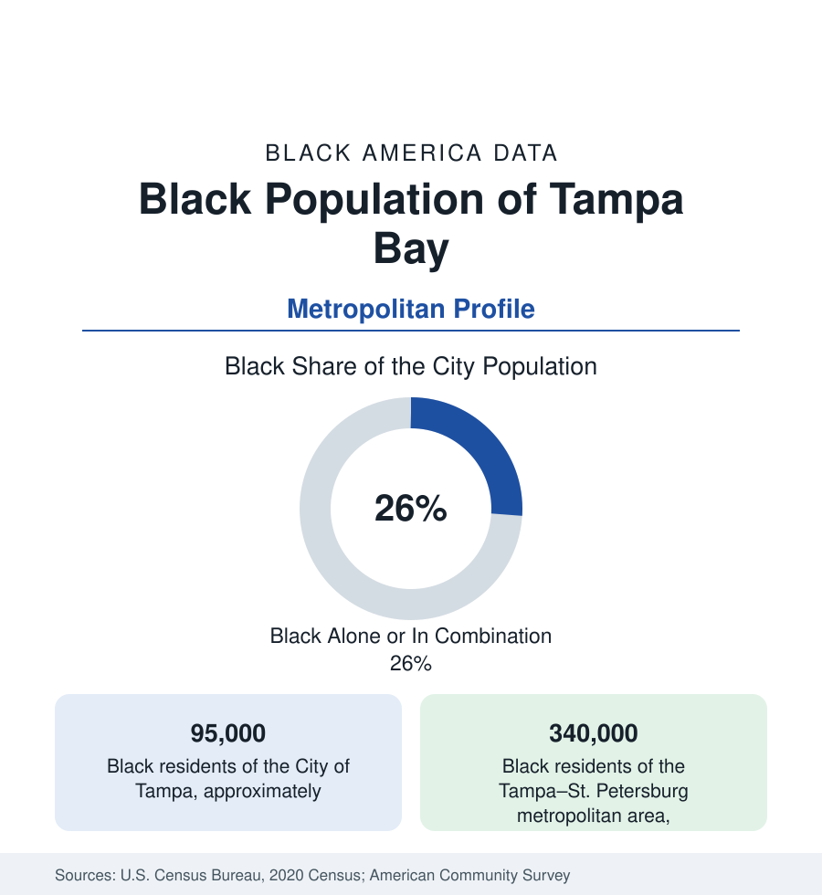

Black Cities
Black Tampa: Central Avenue's Legacy and the Bay's Two Shores
Tampa holds about 95,000 Black residents in the city and 340,000 across Tampa Bay — including St. Petersburg's Deuces Corridor. The census profile.

Tampa holds about 95,000 Black residents within the city — Black alone or in combination, roughly 26 percent of its 385,000 people — and the Tampa Bay metropolitan area about 340,000, divided between Tampa's east and north districts and St. Petersburg's south side across the bay. The Bay's Black history runs through the cigar city's multiracial factory floors and along Central Avenue, Tampa's Black main street, whose mid-century scene was a Southern music landmark.
Central Avenue and the Scrub
Black Tampa's historic center was the Scrub — the district northeast of downtown, settled from the 1860s — and its Central Avenue commercial strip, which by the early twentieth century held hundreds of Black businesses, churches, and the clubs of a music scene that drew the era's national acts (Ray Charles recorded his first sessions' sound here; the district's Lincoln Theatre and its successors hosted the circuit). Ybor City's cigar factories adjoined it, employing Black workers in the industry's racially stratified but internationally mixed workforce — Tampa's Black community has a Cuban and Bahamian layer (the Martí-era exile connections, the Afro-Cuban mutual-aid societies) found nowhere else in Florida except Key West's older stratum. Central Avenue was demolished in the urban-renewal and expressway era — the district is now largely park, parking, and the Encore redevelopment on its footprint — and the community's mass consolidated in East Tampa (College Hill, Belmont Heights, Jackson Heights) and the Progress Village and Palm River districts, the city's first planned Black suburb among them.
St. Petersburg: The Deuces and the South Side
Across the bay, St. Petersburg holds the metro's second Black city population — roughly 60,000 residents, about a fifth to a quarter of the city — centered on the 22nd Street South corridor, 'the Deuces,' the segregation-era Black main street whose Royal Theater and Manhattan Casino hosted the same circuit as Central Avenue, and the south-side districts around it (Childs Park, Lakewood's edge, the Campbell Park neighborhoods). The city's data carry the Bay's starkest internal contrast: the south side's tracts against the waterfront districts' wealth within one municipal boundary, with the redevelopment of the Gas Plant district (the Tropicana Field site, built over a displaced Black neighborhood of the 1980s) the current era's central equity file in the region's data. Clearwater (a smaller, older community in the North Greenwood district) and Largo complete the Pinellas layer.
Economy: Port, Base, and Services
The Bay's Black workforce runs through MacDill Air Force Base (CENTCOM's headquarters — the military layer at flag-officer scale), the port and logistics economy, the great hospital systems, banking and insurance back offices (the Raymond James corridor in St. Pete, Tampa's Westshore), and the tourism economy of the Gulf beaches. Black median income in the metro runs mid-pack in Florida's set; homeownership in East Tampa's and the south St. Pete homeowner districts is the rooted layer; the public-sector and military shares give the profile its stability anchor. The University of South Florida's campuses (Tampa and St. Petersburg) carry the higher-education layer; there is no HBCU in the metro, a gap the region's Black institutions note in a metro of 340,000.
Change and the Estimates
The estimates show steady Black growth — the Hillsborough suburbs (Brandon, Riverview, Ruskin's Wimauma corridor) gaining fastest, Pasco's new suburbs adding a new layer, the historic cores' shares diluting under downtown appreciation on both shores. The composition adds growing Haitian and Afro-Latino communities to the native-born base. The Gas Plant redevelopment's terms — negotiated in the current decade with the displaced district's descendants at the table — are the profile's live data point, watched statewide as the renewal era's precedent.
Reading the Tampa Bay Numbers
The health data of the bay's Black population, in the public health section's tables, follow the two shores' shared pattern: outcomes in the Florida urban band, with the south St. Petersburg and East Tampa tracts recording the access and chronic-disease figures their income data predict.
Tampa Bay is the two-shore profile: one Black community in two cities, joined by the bridges and divided by the region's clearest rich-poor geography. Central Avenue is a park now and the Deuces is a heritage corridor; the 340,000 people in the tables are their inheritors, distributed from Progress Village to Riverview in the suburban pattern the whole section sounds.
More in Black Cities
Black Atlanta: Population, Distribution, and Growth of a Black Metropolis
Metro Atlanta holds more than two million Black residents — roughly one in three, second only to New York. The suburban distribution, migration history, and composition of Black Atlanta in the census data.
Black New York: The Largest Black Population in America
The New York metropolitan area holds about 3.4 million Black residents — more than any metro in the nation — and the city itself about two million. The census profile.
Black Washington: The District and the Metro
The Washington metro holds about 1.6 million Black residents, and the District itself — long a majority-Black city — now records a Black share near 41 percent. The census profile.
Source: U.S. Census Bureau, 2020 Census; American Community Survey; Population Estimates Program.